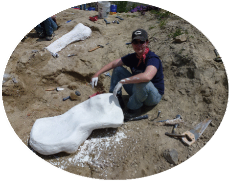
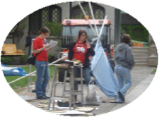

Alla Hoffman: Creative Coder
Hi! I'm Alla Hoffman and I have some cool hobbies.
Like digging up dinosaurs.

Practicing martial arts.
And building crazy things.

As someone with a humanities background who has worked extensively in the nonprofit and start-up worlds, I understand the problems that people who aren't tech savvy are trying to solve. Getting into Launch Academy would give me the tools I need to actually apply that knowledge, and start creating solutions.